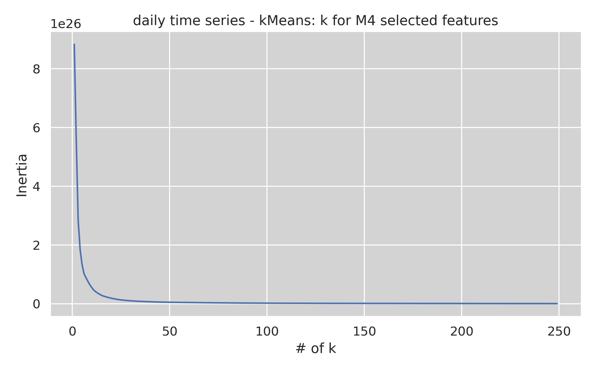
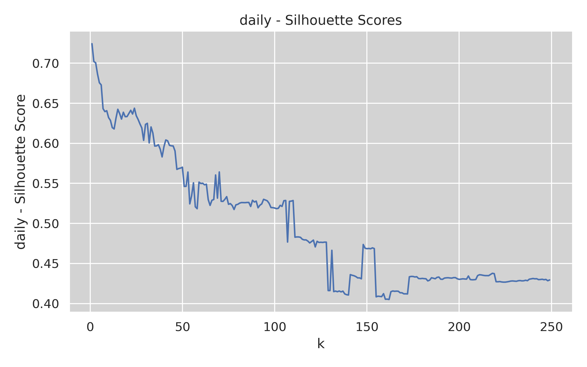
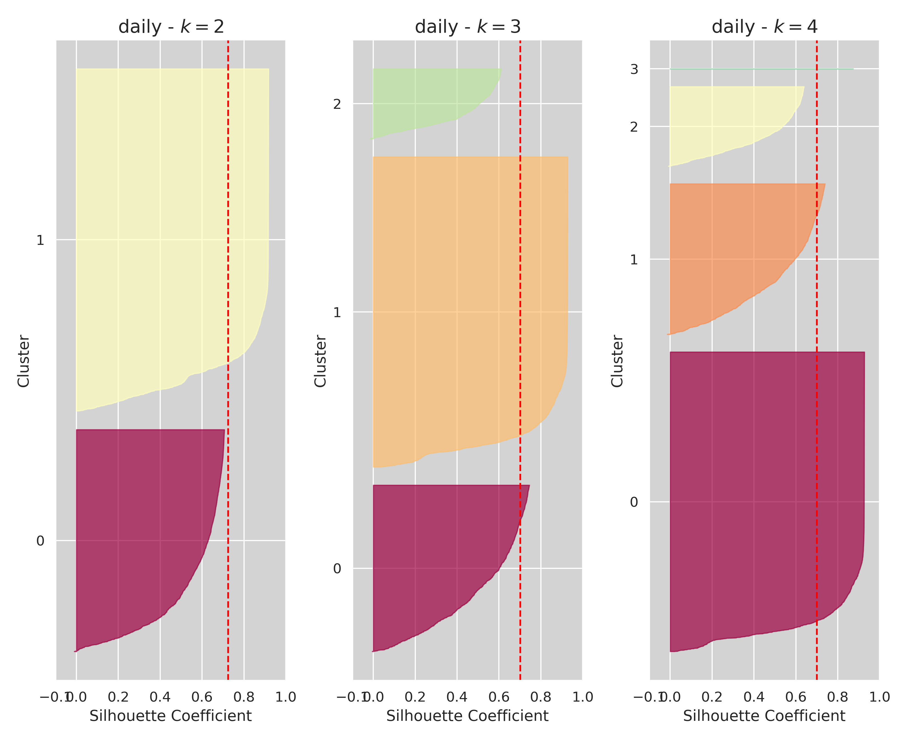
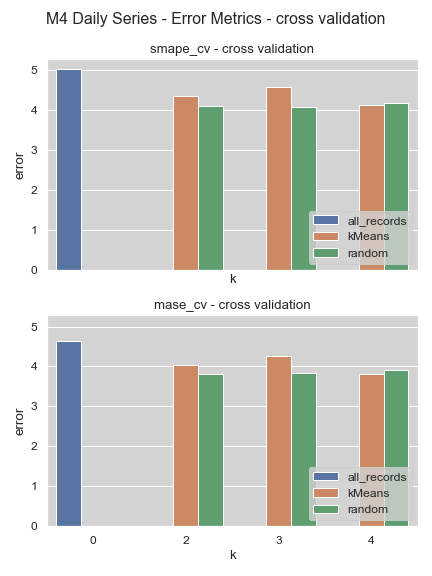
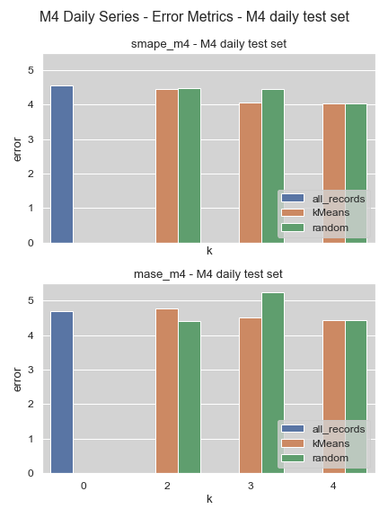

Clustering M4 Daily Data for Forecasting

Philipp Beer
Graduate Program Data Science, UNIC
COMP-501DL Research
Prof. Spyros Makridakis & Prof. Ioannis Katakis
Project Goal
verify whether clustering time series can help improve the forecasting accuracy of machine learning methods and whether it can help get a better estimate of the error using cross-validation
Data Set - M4 competition
- M4 data set are 100,000 time series
- split into hourly, daily, weekly, monthly, quarterly, and yearly series
- from diverse range of domains
- competition asks for forecast for each series
Machine Learning in time series forecasting
- regularly outperformed by M4 competition benchmark
- high computational costs
- few data points for time series
Principal Idea: group similar time series
- group time series with similar properties
- each group provides more data points to learn from
Hypothesis
- similar series are simpler to learn by ML algorithms
- improved accuracy of the algorithm
Question: Can this approach help improve forecasting performance?
Time Series Representation
Feature Representation
- shape-, feature-, model-based
Approach in this project: features
- extract features via a software package
- tsfresh - extracts around 800 features
Clustering
- unsupervised learning technique
- learn from data without or minimal input
K-Means
- grouping unlabeled data into predetermined number of groups
- random starting point of points
- iterative adjustment
Deciding k
Inertia
goal: minimize within cluster sum-of-squares \[ \sum_{i=0}^n \min_{\mu_j \in C}(\lvert \lvert x_i - \mu_j \rvert \rvert^2) \]

Silhouette score
\[ s(i) = \frac{b(i) - a(i)}{{\max\{a(i),b(i)\}}} \]

Silhouette Diagrams

Forecasting
Neural Network
- 3 hidden layers
- features - lags 1 - 7
- loss: MSE \[ MSE = \frac{1}{n} \sum_{i=1}^n (Y_i - \hat{Y}_i)^2 \]
Approach
- full dataset
- clustered datasets
- equivalent random datasets
Cross-Validation
- increase certainty about the error that is encountered in the training
- limit effects of peculiarities in the data on error metrics
Benchmarking
M4 Accuracy Metrics
\[ SMAPE = \frac{100}{n} \sum_{t=1}^{n} \frac{F_t - Y_t}{(\lvert F_t \rvert + \lvert Y_t \rvert)/2} \] \[ MASE = mean \left( \frac{\lvert e_j \rvert}{\frac{1}{T-1} \sum_{t=2}^{T} \lvert Y_t - Y_{t-1} \rvert} \right) \]
Challenges
Data Preprocessing
- data format - wide vs. long format
- Min-Max feature scaling with cross validation with neural networks
- information leakage
Feature extraction and selection
- tsfresh - 800 metrics
- comprehensive vs. efficient
Computational Costs
- 6 vCPU / 32GB RAM
- feature extraction and selection (reason for daily only)
- neural network with cv
Results
Cross validation

M4 results

Conclusion
- clustering results not better than random
features vs lags for NN
- possibly better results
- increase of neural network size
- how meaningful are efficient features
Approach to cross validation
- less folds
- MinMax scaler
Uncertainty in the clustering
- reduced uncertainty in the data clustered data
- indication in MASE (higher in test results compared to cv)
Complexity of problem definition
- many moving parts
- M4 Clustering on Github